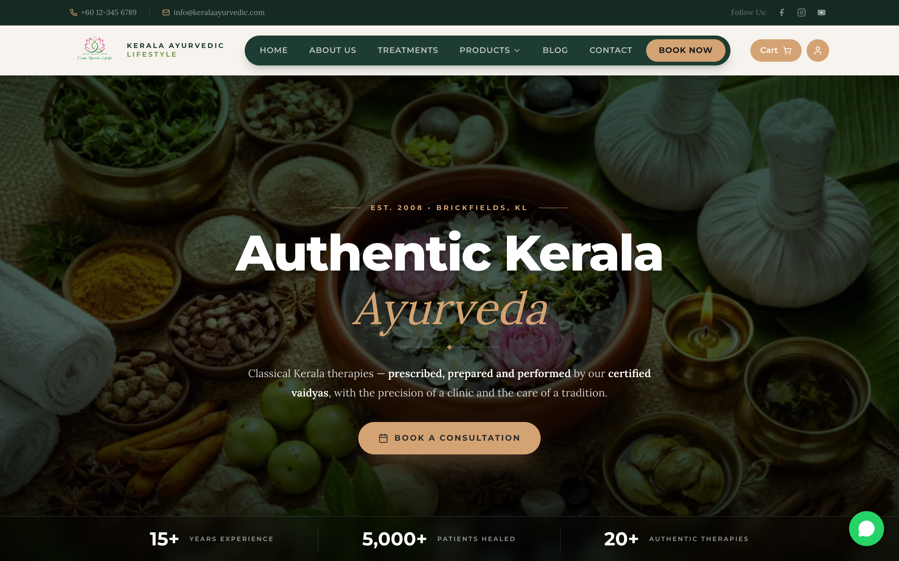
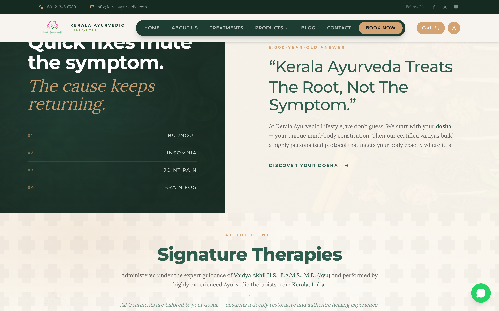
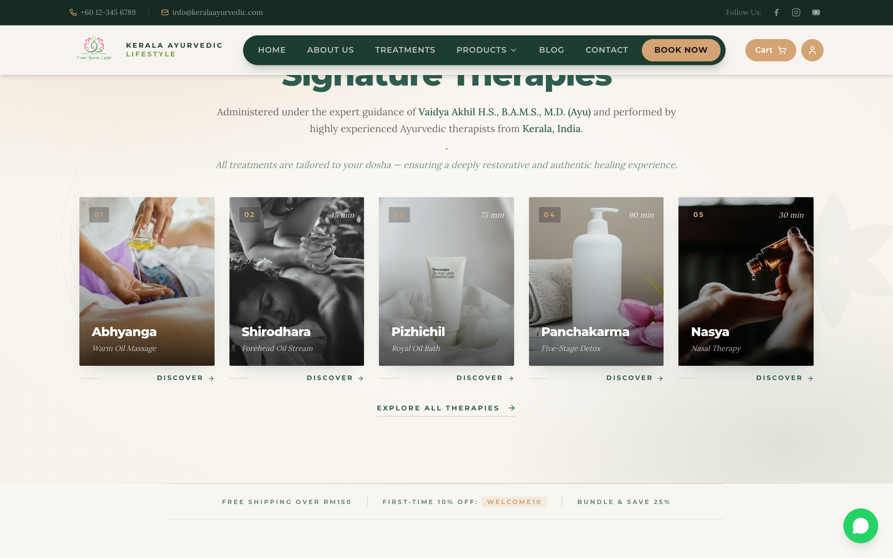
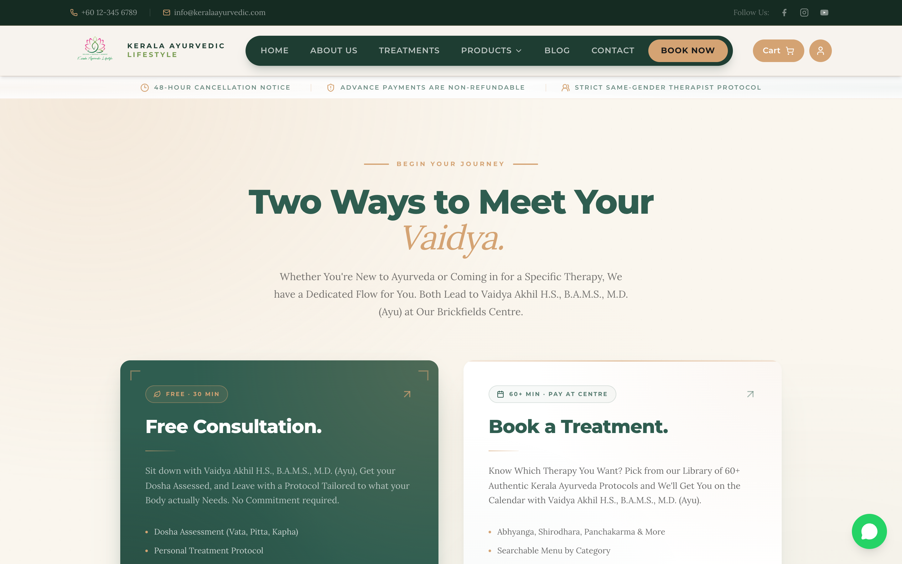
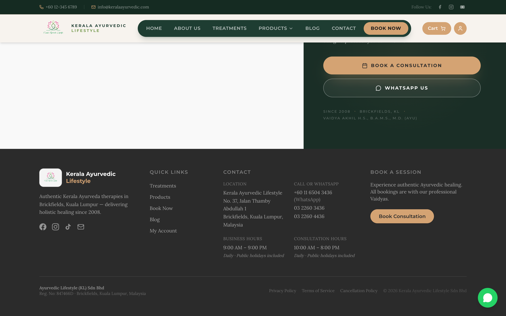

A section-by-section breakdown of what's been built and what's left before launch. Most of the structure and copy is locked in. Two pieces still pending — real photography and customer reviews — make up the final phase.
Site staging: localhost:3100 · Domain to be wired before launch.
Hi team — here's a walkthrough of everything we've shipped on the new site. The homepage, booking flow, and footer are now structurally complete and live on staging. Below is a section-by-section view of what changed, with reference shots so you can see exactly how each part reads.
Two things still pending and they are the final phase: real photography for the therapy cards and clinic shots, and a reviews / testimonials section using actual client feedback. Those are covered at the end of this document under Phase 3.
The new Kerala Ayurvedic Lifestyle logo is now live in the navbar and footer. The brand name reads as the full Kerala Ayurvedic Lifestyle everywhere on the site, instead of the shortened Kerala Ayurvedic we had earlier. The mark holds at small sizes thanks to the lotus emblem, and the wordmark is paired with a clean Montserrat caps version next to it on desktop.
The hero now leads with a single editorial line that signals both clinical rigour and tradition in one beat:
"Classical Kerala therapies — prescribed, prepared and performed by our certified vaidyas, with the precision of a clinic and the care of a tradition."
The whole hero — eyebrow ("Est. 2008 · Brickfields, KL"), heading, sub-headline, "Book a Consultation" button, and the trust stats bar at the bottom (15+ Years · 5,000+ Patients · 20+ Therapies) — fits within one screen on a typical desktop. No scrolling needed before the visitor sees the call to action.

The thin green strip just under the hero used to read "Vaidya Akhil H.S., B.A.M.S., M.D. (Ayu)". We replaced that with a "Certified Vaidyas (B.A.M.S., M.D. Ayu)" line — the credential is still front and centre, but the individual name now appears in the dedicated booking and therapy sections where it carries the most weight. The new strip reads:
SINCE 2008 · CERTIFIED VAIDYAS (B.A.M.S., M.D. AYU) · AUTHENTIC KERALA FORMULAS
The dark-green / cream split section right below the trust strip stages the "problem vs solution" beat. Two changes here:

This was the biggest change on the homepage. The old design was a long scroll-through with a sticky image swap on the right. The new design is a five-card editorial row that fits in one screen — visitors see the entire menu at a glance.
The sub-headline you sent across is in place verbatim:
"Administered under the expert guidance of Vaidya Akhil H.S., B.A.M.S., M.D. (Ayu) and performed by highly experienced Ayurvedic therapists from Kerala, India. All treatments are tailored to your dosha — ensuring a deeply restorative and authentic healing experience."
Each card shows the index (01–05), duration overlay, image, name, tagline, and a "Discover →" link. Pricing has been removed from the homepage cards — visitors see prices only when they actually go to book. Keeps the homepage feeling like a menu, not a shop.

The /book page is the chooser — visitors land here from the navbar's "Book Now" button and pick between a free consultation or a direct treatment booking. Copy across the page is now in Title Case, and "Brickfields clinic" was changed to "Brickfields Centre" everywhere.
Two Ways to Meet Your Vaidya.
Whether You're New to Ayurveda or Coming in for a Specific Therapy, We have a Dedicated Flow for You. Both Lead to Vaidya Akhil H.S., B.A.M.S., M.D. (Ayu) at Our Brickfields Centre.
Body and bullets reworked in Title Case, full credentials restored:
Sit down with Vaidya Akhil H.S., B.A.M.S., M.D. (Ayu), Get your Dosha Assessed, and Leave with a Protocol Tailored to what your Body actually Needs. No Commitment required.
· Dosha Assessment (Vata, Pitta, Kapha)
· Personal Treatment Protocol
· Lifestyle & Diet Guidance
Same Title Case treatment, badge updated to "60+ MIN · PAY AT CENTRE":
Know Which Therapy You Want? Pick from our Library of 60+ Authentic Kerala Ayurveda Protocols and We'll Get You on the Calendar with Vaidya Akhil H.S., B.A.M.S., M.D. (Ayu).
· Abhyanga, Shirodhara, Panchakarma & More
· Searchable Menu by Category
· Direct Slot Booking

Footer's contact column now carries everything you sent across, organised into four sub-blocks so it sits balanced against the other footer columns instead of stretching down the page.
Clickable — opens directly in Google Maps:
Kerala Ayurvedic Lifestyle
No. 37, Jalan Thamby Abdullah 1
Brickfields, Kuala Lumpur, Malaysia
All three numbers are wired — WhatsApp link on the first, tap-to-dial on the two landlines:

Two things left to wire up. Both depend on content from your end. Once they're in place, the site is ready for launch.
The five Signature Therapy cards on the homepage currently use stock placeholders. For launch we need authentic shots — ideally one strong vertical / portrait image per therapy:
Optional but useful: 4–6 additional clinic interior / therapist-at-work shots for use elsewhere on the site (about page, booking page header, blog).
Portrait orientation (4:5), shot in natural light, focused on the therapy in progress (hands, oils, treatment table). Faces of staff are fine; client privacy permitting. RAW or high-res JPEG. We can bring them up to web standard from there.
We'll add a dedicated testimonials section to the homepage (between the therapies and the booking CTA) once you send over real client feedback. Layout-wise we're planning a clean editorial card row — quote, author, condition treated.
Voice notes or WhatsApp messages from happy clients are fine — we'll transcribe and tidy them up. Make sure you have permission to use the names publicly.
Once we have these, plug-in and launch is a matter of a couple of working days.
— Sanjay Gunabalan
Aurexis Solution · aurexissolution@gmail.com